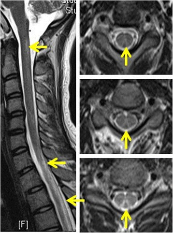
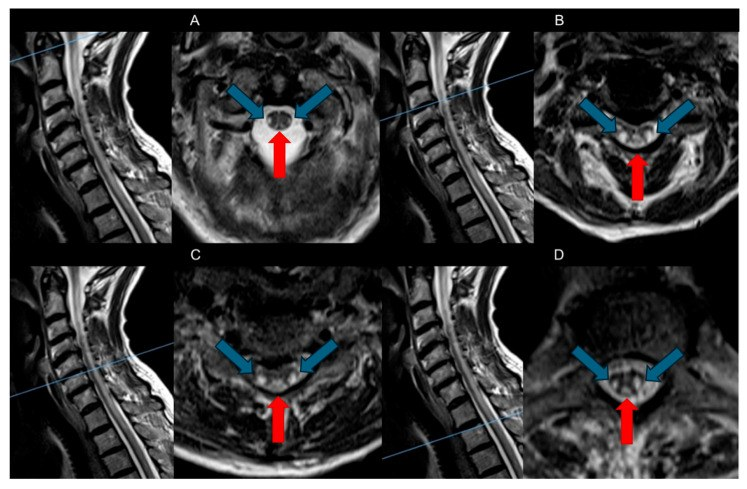
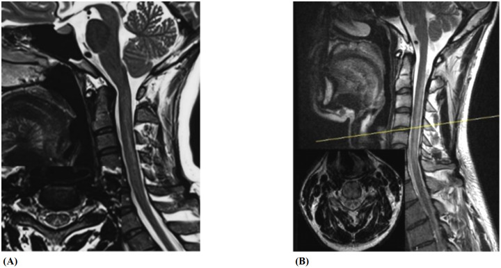
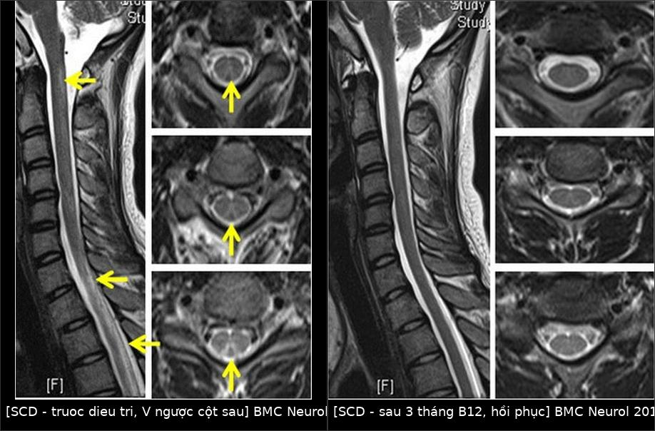

281 — Thoái hóa tủy kết hợp bán cấp do thiếu vitamin B12 / Subacute combined degeneration (SCD)
Tags: pattern:tang-tin-hieu-t2 pattern:doi-xung pattern:cot-sau pattern:tuy-doc-dai pattern:myelopathy vung:thankinh vung:tuy-song protocol:MRI-tuy-song protocol:B12 protocol:MMA-homocysteine
Mức chắc chắn (certainty): tổng hợp y văn (literature synthesis) — 1 tổng quan hệ thống về MRI và điều trị SCD (PMC12468238), 1 đoàn hệ so sánh SCD do N₂O với SCD không do N₂O (50 vs 48 bệnh nhân, PMC7884630), 1 nghiên cứu so sánh N₂O-SCD với SCD do thiếu B12 (23 vs 20, PMC12066286), 1 ca N₂O có B12 bình thường kèm hồi phục MRI sau 3 tháng (PMC5745895) và 1 ca thiếu đồng bắt chước SCD (PMC11805716). Câu nào là suy luận được ghi [suy luận].
Vì sao bài này quan trọng: SCD là nguyên nhân tủy sống hồi phục được nếu nhận ra sớm — nhưng B12 máu bình thường không loại trừ (ca PMC5745895 có B12 800 pg/mL, Hcy 8 µmol/L mà vẫn SCD nặng vì N₂O), và thiếu đồng cho hình ảnh không phân biệt được trên MRI (PMC11805716). Bỏ sót → liệt hai chi, mất kiểm soát cơ tròn; điều trị sai hướng (ví dụ chỉ bổ sung folate, hoặc coi là bệnh tủy do chèn ép) → tổn thương không hồi phục.
1. Tổng quan bệnh học – cơ chế hình ảnh
1.1. Thiếu B12 làm hỏng myelin theo hai đường
- B12 (cobalamin) là cofactor của methionine synthase (homocysteine → methionine) và methylmalonyl-CoA mutase (methylmalonyl-CoA → succinyl-CoA).
- Đường 1 — giảm methyl hóa myelin: thiếu B12 → homocysteine tăng, S-adenosyl-methionine (SAM) giảm → myelin protein/lipid không được methyl hóa → myelin mỏng, không ổn định.
- Đường 2 — ngộ độc methylmalonic acid (MMA): MMA tích tụ → ức chế tổng hợp myelin, gây phù và thoái hóa dạng bọt (spongiform) sợi trục.
- Vì sao gọi "kết hợp" (combined): tổn thương cột sau (cảm giác sâu: rung, bản thể, sờ tinh tế) và cột bên (bó corticospinal: yếu, tăng phản xạ, Babinski) cùng lúc — mất cảm giác + dấu hiệu thần kinh trung ương, khác hẳn bệnh rễ/thần kinh ngoại vi thuần túy.
- Vì sao bắt đầu ở tủy ngực trên: các sợi dài, myelin dày, nhu cầu chuyển hóa cao dễ tổn thương nhất; từ đây tổn thương lan lên cổ hoặc xuống theo chiều dọc (PMC12468238).
- Khoảng 30% bệnh nhân thiếu B12 có bệnh thần kinh ngoại vi kèm theo → thể myeloneuropathy với cả dấu hiệu trung ương và ngoại vi (PMC12468238).
1.2. TẠI SAO tăng tín hiệu T2 đối xứng ở cột sau
- T2-weighted MRI nhạy với nước tự do: vùng myelin bị phù/thoái hóa dạng bọt làm tăng nước ngoại bào → tăng tín hiệu T2.
- Đối xứng vì tổn thương theo bó giải phẫu, không theo mạch máu: hai bó Goll (cột sau trong) nằm sát nhau ở rãnh giữa sau → trên mặt cắt trục tạo hình chữ V ngược ("inverted V") hoặc "tai thỏ" (inverted rabbit ears) — hai "tai" sáng đối xứng hai bên đường giữa (PMC12468238, PMC5745895).
- Sagittal T2: dải tăng tín hiệu dọc dài, thường liên tục qua nhiều đốt sống (ca PMC5745895: C1–T12).
- Thường KHÔNG ngấm thuốc: hàng rào máu–tủy không bị phá vỡ đáng kể; ngấm thuốc nhẹ hiếm gặp (PMC12468238). Vì vậy không cần tiêm cản quang để chẩn đoán; ngấm thuốc mạnh gợi ý nguyên nhân khác (viêm tủy, NMO, u).
- Tủy không giãn, không teo sớm: khác với u trong tủy (giãn tủy) và bệnh mạn (teo muộn).

*Hình 1 — Nữ 20 tuổi, dị cảm và đi loạng choạng 15 ngày sau lạm dụng N₂O: (trái) T2 sagittal tổn thương dọc dài; (phải) ba mặt cắt axial cho thấy tăng tín hiệu đối xứng cột sau — dấu "chữ V ngược"/"tai thỏ". Nguồn: BMC Neurol 2017, PMC5745895, CC BY 4.0 — ảnh nguyên bản.*1.3. Số liệu định lượng cốt lõi
- Ngưỡng xét nghiệm (PMC12468238): B12 < 200 pg/mL**; **MMA > 270 nmol/L; homocysteine > 15 µmol/L; MCV > 115 fL (đại hồng cầu); bạch cầu đa nhân ưa kiềm.
- B12 bình thường vẫn có thể thiếu mô: trong SCD do N₂O, B12 trung vị 218 pg/mL (IQR 121–350) — nằm trong khoảng bình thường — so với 96 pg/mL (IQR 50–170) ở SCD không do N₂O (p < 0,05) (PMC7884630). Ca PMC5745895 có B12 800 pg/mL, Hcy 8 µmol/L, folate 4,40 ng/mL (thấp).
- Dịch tễ — hai nhóm tuổi khác nhau: SCD do N₂O 21,4 ± 4,7 tuổi (50 bệnh nhân); SCD không do N₂O 62,0 ± 11,4 tuổi (48 bệnh nhân) (PMC7884630).
- Tiên lượng: khoảng 90% điều trị ổn định hoặc cải thiện; hồi phục hoàn toàn có thể xảy ra nhưng không phải quy luật (PMC12468238).
2. Mẫu hình + chẩn đoán phân biệt theo vị trí (Gamut)
2.1. Theo vị trí tủy
- Cột sau (dorsal columns): dấu "chữ V ngược"/"tai thỏ", đối xứng, thường ngực trên → cổ — mẫu hình đặc hiệu nhất của SCD.
- Cột bên (lateral corticospinal): tăng tín hiệu kèm theo → "combined"; nếu chỉ cột bên phải nghĩ nguyên nhân khác (xơ cứng rải rác bên, nhồi máu tủy).
- Tủy cổ + ngực liên tục (longitudinally extensive): ca PMC5745895 C1–T12 — cần phân biệt viêm tủy ngang dọc dài/NMO, nhưng NMO thường trung tâm/asymmetric, có NMO-IgG, ngấm thuốc.
- Nhu mô não: tổn thương chất trắng lan tỏa/rải rác có thể gặp và hồi phục sau bổ sung B12 (PMC12468238).
2.2. Theo nguyên nhân (gamut nguyên nhân)
- Thiếu hấp thu: thiếu máu Biermer/pernicious anemia (kháng thể kháng intrinsic factor, teo niêm mạc dạ dày), cắt dạ dày, bệnh Crohn/celiac, metformin, ức chế bơm proton (PPI) kéo dài.
- Ăn chay tuyệt đối kéo dài (B12 chỉ có trong thức ăn động vật).
- Bệnh di truyền: hội chứng Imerslund–Gräsbeck (khiếm khuyết receptor cubilin, trẻ em), thiếu transcobalamin.
- N₂O (khí cười): oxy hóa không hồi phục cobalt của B12 → ức chế methionine synthase dù B12 miễn dịch vẫn "bình thường" → thể SCD trẻ, nặng, kèm loạn thần/giảm nhận thức (PMC5745895, PMC12066286).
- Bắt chước không do B12: thiếu đồng (myelopathy cột sau + thiếu máu/giảm bạch cầu), thiếu vitamin E, myelopathy do methotrexate — MRI không phân biệt được với SCD (PMC12468238, PMC11805716).

Hình 2 — SCD ở nữ 74 tuổi: (A–D) các mặt cắt sagittal T2 và axial tương ứng; mũi tên đỏ chỉ cột sau, mũi tên xanh chỉ cột bên — tổn thương đối xứng cả hai cột. Nguồn: Brain Sci 2025, PMC12468238, CC BY 4.0 — ảnh nguyên bản.3. Bảng so sánh phân biệt (ma trận đối chiếu)
| Thực thể (entity) | Hình ảnh điển hình | Chốt vào (rule-in) | Chốt loại (rule-out) | Gợi ý xác nhận |
|---|---|---|---|---|
| SCD do thiếu B12 | T2 tăng tín hiệu đối xứng cột sau ("V ngược"), ± cột bên; dọc dài; không ngấm thuốc; tủy không giãn | Đối xứng + cột sau + B12 thấp/MMA–Hcy tăng | Tổn thương một bên/không đối xứng hoặc giãn tủy → nghĩ u/viêm | B12, MMA > 270 nmol/L, Hcy > 15 µmol/L, anti-IF |
| SCD do N₂O | Giống hệt SCD; có thể dọc dài hơn, kèm tổn thương não; bệnh nhân trẻ | Tiền sử khí cười + B12 "bình thường" + Hcy/MMA tăng | Không có phơi nhiễm và B12 thấp → thể kinh điển | Hỏi kỹ "bóng cười"/whippets; MMA/Hcy; theo dõi sau ngừng |
| Thiếu đồng (copper deficiency) | Không phân biệt được với SCD trên MRI: cột sau ± cột bên | B12 bình thường + không đáp ứng B12 + giảm đồng/ceruloplasmin | Đồng bình thường → loại trừ | Đồng huyết thanh, ceruloplasmin, CBC (thiếu máu/giảm bạch cầu) |
| Rò động–tĩnh mạch màng cứng (SDAVF) | T2 tăng tín hiệu tủy dọc dài, phù tủy, dòng chảy (flow voids) quanh tủy; thường nam lớn tuổi, tiến triển | Flow voids + phù tủy + tuổi lớn + nặng dần khi gắng sức | Không flow void, đối xứng cột sau → SCD | MR/CTA tủy; chụp mạch; không dùng corticoid mù |
| Viêm tủy thị thần kinh (NMO) | LETM ≥ 3 đốt, tổn thương trung tâm, ngấm thuốc, có thể asymmetric | NMO-IgG dương + LETM trung tâm + viêm thị thần kinh | Đối xứng cột sau, không ngấm thuốc → SCD | NMO-IgG/AQP4, MRI não + tủy, dịch não tủy |
| Xơ cứng rải rác (MS) | Ổ bất đối xứng, ngoại vi, ngắn (< 2 đốt), hình bầu dục; tổn thương não đặc trưng | Ổ bất đối xứng + tiền sử từng đợt + Dawson fingers | Đối xứng cột sau dọc dài → SCD | MRI não + tủy, dịch não tủy (OCB) |
| Tabes dorsalis (giang mai) | Teo cột sau muộn, tủy teo, không phù; kèm Argyll Robertson, đau chói | Huyết thanh/CSF giang mai dương + mất phản xạ gân gối | Không có bằng chứng giang mai → loại trừ | VDRL/TPHA, CSF |
4. Protocol chẩn đoán + điều trị + theo dõi
4.1. MRI — cách chụp để không bỏ sót
- MRI toàn bộ tủy sống (cổ + ngực; thêm thắt lưng nếu triệu chứng), T2 sagittal + T2 axial từng đốt (không chỉ sagittal — "chữ V ngược" chỉ thấy trên axial).
- STIR/T2 fat-sat để phân biệt phù tủy với mỡ; T1 ± gadolinium chỉ khi nghi viêm/u (SCD điển hình không ngấm thuốc).
- Không cần cản quang để chẩn đoán SCD (PMC12468238); ngấm thuốc mạnh không thuộc SCD điển hình.
4.2. Xét nghiệm tối thiểu (theo thứ tự ưu tiên)
- CBC + MCV (đại hồng cầu > 115 fL, đa nhân ưa kiềm).
- B12 huyết thanh — nhưng không dừng lại nếu bình thường: làm MMA (> 270 nmol/L) và homocysteine (> 15 µmol/L).
- Folate, anti-intrinsic factor, gastrin (nghi Biermer).
- Đồng/ceruloplasmin, vitamin E nếu B12 bình thường hoặc không đáp ứng điều trị.
- Hỏi phơi nhiễm N₂O (bóng cười/whippets) — chi phí bằng 0, giá trị cao (PMC7884630, PMC5745895).
4.3. Điều trị (theo PMC12468238)
| Tình huống | Đường | Liều |
|---|---|---|
| SCD/thiếu B12 có triệu chứng thần kinh | Tiêm bắp (IM) ưu tiên | 1.000 µg mỗi ngày × 2 tuần (hoặc cách ngày), sau đó 1.000 µg mỗi tháng |
| Thiếu B12 không biến chứng | IM hoặc uống | 1.000 µg/tuần × 1 tháng, rồi hàng tháng |
| Kém hấp thu | Uống liều cao | 1.000–2.000 µg/ngày |
| Nguyên nhân N₂O | IM + ngừng phơi nhiễm tuyệt đối | Như trên; ngừng N₂O là điều kiện bắt buộc |
- Thời gian: suốt đời nếu nguyên nhân không hồi phục (cắt dạ dày, Biermer); đến khi sửa được nguyên nhân với thể hồi phục.
- Theo dõi: lâm sàng + MRI lặp sau 3 tháng — ca PMC5745895 hồi phục cảm giác, dáng đi, nhận thức (MMSE 23 → 30) và MRI sạch tổn thương sau 3 tháng.
flowchart TD
A["Myelopathy bán cấp: dị cảm + đi loạng choạng + Babinski"] --> B["MRI toàn bộ tủy: T2 sagittal + axial từng đốt"]
B --> C{"Tăng tín hiệu đối xứng cột sau?"}
C -->|Có| D["Định lượng B12, MMA, homocysteine, folate, CBC"]
C -->|Không| E["Nghĩ NMO/MS/SDAVF/u: làm NMO-IgG, MRI não, chụp mạch"]
D --> F{"B12 thấp hoặc MMA > 270 hoặc Hcy > 15?"}
F -->|Có| G["B12 tiêm bắp 1.000 µg/ngày × 2 tuần, rồi hàng tháng"]
F -->|Không| H["Hỏi N2O; đo đồng/ceruloplasmin, vitamin E"]
H --> I{"Có phơi nhiễm N2O?"}
I -->|Có| G
I -->|Không| J["Thiếu đồng/vitamin E/methotrexate: điều trị nguyên nhân"]
G --> K["Ngừng phơi nhiễm; MRI + lâm sàng sau 3 tháng"]
5. Biến thể bình thường và cạm bẫy
- Cạm bẫy 1 — "B12 bình thường là loại trừ": ca PMC5745895 có B12 800 pg/mL và Hcy 8 µmol/L vẫn SCD do N₂O; trong đoàn hệ N₂O, B12 trung vị 218 pg/mL nằm trong khoảng bình thường (PMC7884630). Luôn hỏi tiền sử khí cười ở người trẻ có myelopathy cột sau.
- Cạm bẫy 2 — bổ sung folate đơn thuần: folate thấp (4,40 ng/mL trong ca PMC5745895) có thể che/ làm nặng thiếu B12 về mặt huyết học; điều trị folate mà không B12 có thể làm tổn thương thần kinh tiến triển [suy luận từ cơ chế methyl hóa].
- Cạm bẫy 3 — thiếu đồng bắt chước SCD: MRI không phân biệt được; bệnh nhân không đáp ứng B12 và hồi phục với bổ sung đồng (PMC11805716). Ở người đã phẫu thuật dạ dày/ruột, nghĩ đến cả đồng (PMC12468238).
- Cạm bẫy 4 — SDAVF bị điều trị như SCD: dòng chảy quanh tủy + phù tủy + nam lớn tuổi; corticoid có thể làm nặng; cần chụp mạch trước khi kết luận [suy luận].
- Cạm bẫy 5 — MRI bình thường sớm (clinical–radiological dissociation): có ca triệu chứng rõ mà MRI chưa đổi; không loại trừ SCD bằng một MRI âm tính, nhất là khi xét nghiệm chuyển hóa dương (PMC7076925).
- Cạm bẫy 6 — "chữ V ngược" không chỉ của SCD: có thể gặp trong thiếu đồng, thiếu vitamin E, myelopathy do methotrexate; hình ảnh gợi ý, xét nghiệm quyết định.

Hình 3 — (A) SCD do thiếu B12 nguyên phát; (B) SCD do lạm dụng N₂O có tổn thương lan rộng hơn, kèm mặt cắt axial. Nguồn: Front Immunol 2025, PMC12066286, CC BY 4.0 — ảnh nguyên bản.6. Tự lượng giá — Blind Quiz
Ca 1 — Nữ 20 tuổi, dị cảm hai chân và tay, đi loạng choạng 15 ngày. B12 máu 800 pg/mL.
- Gợi ý: bệnh nhân dùng 100–200 "bóng cười" mỗi ngày hơn 1 năm; B12 800 pg/mL (211–911), Hcy 8 µmol/L.
- Câu hỏi: mô tả dấu hiệu trên axial? Vì sao B12 bình thường mà vẫn SCD? Xét nghiệm nào xác nhận và điều trị ra sao?
Bấm để hiện đáp án (findings + chẩn đoán)
- Dấu hiệu: tăng tín hiệu T2 đối xứng cột sau hình "chữ V ngược"/"tai thỏ", dải dọc dài trên sagittal (C1–T12).
- Vì sao B12 bình thường: N₂O oxy hóa không hồi phục cobalt → bất hoạt B12 tại mô dù miễn dịch đo được vẫn bình thường; MMA/Hcy mới phản ánh thiếu chức năng.
- Xác nhận: MMA > 270 nmol/L, Hcy > 15 µmol/L, tiền sử N₂O; loại trừ thiếu đồng.
- Điều trị: ngừng N₂O tuyệt đối + B12 tiêm bắp 1 mg/ngày; ca này hồi phục và MRI sạch sau 3 tháng.
- Nguồn ảnh: BMC Neurol 2017, PMC5745895, CC BY 4.0.
Ca 2 — Cùng bệnh nhân sau 3 tháng điều trị: chụp lại MRI.

- Gợi ý: bệnh nhân đã ngừng N₂O và tiêm B12; triệu chứng cảm giác/dáng đi hồi phục, MMSE 23 → 30.
- Câu hỏi: hình bên phải khác bên trái thế nào? Điều này nói gì về tiên lượng và về thời điểm chụp lại?
Bấm để hiện đáp án (findings + chẩn đoán)
- Dấu hiệu: (trái) trước điều trị — dải tăng tín hiệu dọc tủy và "V ngược" cột sau; (phải) sau 3 tháng — hết tăng tín hiệu, cột sau trở về bình thường.
- Ý nghĩa: SCD là tổn thương myelin hồi phục được nếu điều trị sớm và loại bỏ nguyên nhân; MRI hồi phục song song với lâm sàng.
- Thời điểm: chụp lại 3 tháng sau điều trị là mốc hợp lý; hồi phục hoàn toàn không loại trừ cần theo dõi tiếp nếu nguyên nhân không sửa được.
- Nguồn ảnh: BMC Neurol 2017, PMC5745895, CC BY 4.0 — ảnh ghép letterbox, giữ nguyên tỉ lệ.
Ca 3 — Nam 32 tuổi nông dân: dị cảm, mất cảm giác rung, tăng phản xạ, đi mất thăng bằng. B12 bình thường, không đáp ứng B12.
- Gợi ý: không dùng rượu, không khí cười; B12 bình thường; đã tiêm B12 không cải thiện.
- Câu hỏi: hai xét nghiệm cần làm thêm? Vì sao không được kết luận SCD? Điều trị khác gì?
Bấm để hiện đáp án (findings + chẩn đoán)
- Dấu hiệu: MRI có thể giống SCD (cột sau ± cột bên) — hình ảnh không phân biệt được với SCD.
- Cần làm: đồng huyết thanh + ceruloplasmin (và vitamin E, CBC tìm thiếu máu/giảm bạch cầu) — ca PMC11805716 là thiếu đồng, hồi phục hoàn toàn nhờ bổ sung đồng uống.
- Vì sao không kết luận SCD: B12 bình thường + không đáp ứng B12 → phải tìm nguyên nhân khác trước khi tiếp tục B12 vô ích.
- Điều trị: bổ sung đồng theo nguyên nhân; không tăng liều B12.
- Nguồn ảnh: Brain Sci 2025, PMC12468238, CC BY 4.0 (ảnh minh họa SCD điển hình; ca mô tả lấy từ PMC11805716).
Bài liên quan chéo
- 200 – Tổng quan hệ Thần kinh
- 265 – Ngộ độc khí cười (N₂O) ở tủy
- 267 – Presyrinx và tủy mềm hồi phục
- 280 – Bệnh tủy do thiếu đồng
Ảnh
- Tên file:
281_slug_Modality_SourceID.jpg; nguồn + giấy phép từng ảnh trongimages/CREDITS.md. - Ảnh ghép
images/composite_scd-truoc-sau.jpgtạo bằngtools/make_composite.py(letterbox, giữ tỉ lệ).
Không dùng để chẩn đoán độc lập khi chưa có người hướng dẫn.